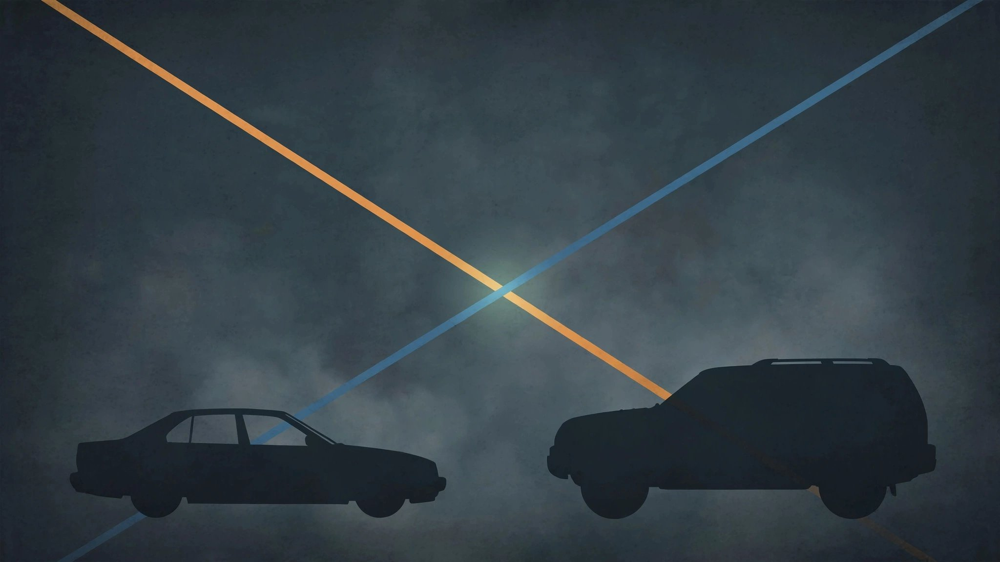

In 2021, SUVs Started Killing More People Than Sedans. The Safety Narrative Didn’t Update.

For twenty years, a single class of vehicle dominated America’s body count. Sedans — the Accords, the Camrys, the Malibus — reliably produced more fatalities per model-year cohort than any other vehicle type in the FARS database. In 2009, the ratio peaked at 4.77 sedan deaths for every SUV death among vehicles of the same model year. It was the undisputed king of the morgue. Not anymore it isn’t.
Then the ratio started falling, slowly at first, then with the steady predictability of a regression line that knows where it’s going.
By model year 2019, the ratio had collapsed to 1.11, with sedans and SUVs producing nearly identical death tolls per cohort, and by 2020 it sat at 1.07. Then model year 2021 broke the floor: 735 sedan deaths versus 785 SUV deaths among vehicles of the same vintage, a ratio of 0.94. For the first time in the modern FARS dataset, SUVs produced more total fatalities per model-year cohort than sedans, and model year 2022 confirmed the shift at 0.92, with SUVs at 360 deaths versus 331 for sedans.[1]
Nobody announced this crossover. No press release, no congressional hearing. Americans were told to buy SUVs because they were safer, and yet SUVs quietly became the vehicle class producing the larger share of the body count while the marketing copy didn’t flinch.
Monotonic and unmistakable, the decline ran from 2009 through 2022, with the sedan-to-SUV death ratio falling in every single model-year cohort except two (2010 and 2012, both minor reversals within the larger collapse). Thirteen years of continuous convergence, ending in a crossover that the data saw coming a decade before it arrived.
To be precise about the math: I tabulated every fatality in FARS 2014–2023 by the model year and vehicle class of the crash-involved vehicle, then computed the sedan-to-SUV ratio for each model-year cohort from 2000 through 2022. What emerged is a decline curve so clean it could have been drawn with a straightedge — from 4.77 in 2009 to 0.92 in 2022, crossing unity somewhere around model year 2020.5.[1]
Beyond the crossover itself, a broader recomposition of the American death toll is underway. Sedans still account for 46.6% of all deaths in the dataset against 32.5% of the fleet, a 1.44x overrepresentation that reflects the aging sedan fleet still on the road. SUVs account for 24.3% of deaths against 39.6% of the fleet, a 0.61x underrepresentation. But that gap is closing, model year by model year, as old sedans age out and new SUVs accumulate exposure years.[1]
Now for the strongest counterargument, stated at full strength, because it deserves to be: the individual SUV buyer is still making a safer choice. SUV death rates per 100 million VMT remain substantially lower than sedan rates across almost every model in the dataset. This crossover is a fleet composition effect, not a safety regression. Seventy-eight percent of new vehicle sales are now SUVs and light trucks.[2] When a vehicle class captures four-fifths of the market, it mathematically inherits a larger share of the death toll, even if each individual unit is safer per mile driven. If you replaced every remaining sedan on the road with an equivalent-year SUV, total fatalities would probably decline.
But that counterargument, correct as it is, exposes the deeper problem: the safety dividend from the sedan-to-SUV migration has been fully consumed by volume. America bought SUVs partly because they were safer per mile. True. America now has so many SUVs that they produce more aggregate deaths than the sedans they replaced. Also true. Both facts coexist, but the fleet-level outcome has reversed sign, and any system-level claim that SUVs make America’s roads safer now requires an asterisk the size of a footnote.
Two limitations deserve mention here. First, FARS 2014–2023 gives newer model years (2021–2022) fewer exposure years, which suppresses absolute death counts for all classes equally; the ratio is still meaningful because both sedans and SUVs face the same observation window, but individual cohort totals for recent model years will grow as more crash data accumulates. Second, “deaths” in FARS includes every single fatality in every crash involving a vehicle of that type, regardless of who died: the driver, the passenger, the person in the other car, or the pedestrian on the sidewalk. An SUV that kills a pedestrian counts as an SUV death. This doesn’t invalidate the finding, but it means the crossover reflects total harm inflicted, not just occupant risk.
What this means for you: If you’re shopping for a new vehicle, ignore the class-level averages entirely. Between the safest and deadliest vehicle within any single class (sedan, SUV, pickup), the spread in death rates is 30x or more. A well-chosen sedan (Subaru Legacy, 0.95; Mazda 3, 0.45) can be safer than a poorly chosen SUV (Chevrolet Trailblazer, 2.83; Mitsubishi Endeavor, 1.65). Look up your specific model’s FARS death rate before you sign anything. That “SUV = safe” shorthand stopped being useful the moment SUVs started producing more total deaths than the sedans they were supposed to replace.
Sources & References
- NHTSA, Fatality Analysis Reporting System (FARS), 2014–2023. Cross-tabulation of fatalities by vehicle class and model year computed from FARS bulk data. nhtsa.gov
- Motorintelligence.com, U.S. new vehicle market share data, 2025. Referenced via IIHS research and WVLT/InvestigateTV reporting. iihs.org
Source: NHTSA FARS 2014–2023. “Deaths” includes all fatalities in crashes involving each vehicle class, not just occupants. Model years 2021–2022 have fewer observation years in the dataset; the ratio trend is robust but individual cohort totals will grow as data accumulates. See methodology for caveats.